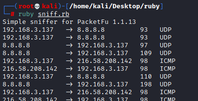

script: Packet Sniffer Network
promiscuous version of
https://github.com/packetfu/packetfu/blob/31cbecca9cd6d3486629ff4797433784a37ce2e4/examples/simple-sniffer.rb
#!/usr/bin/env ruby
require 'packetfu'
puts "Promiscuous network sniffer for PacketFu #{PacketFu.version}"
include PacketFu
#default iface is eth0
iface = ARGV[0] || PacketFu::Utils.default_int
def sniff(iface)
#to the capture we can set also a filter
# Example of a filter for a certain destination port
# :filter => "tcp dst port 80"
cap = Capture.new(:iface => iface, :promisc => true, :start => true)
#|p| is the raw packet
cap.stream.each do |p|
#parse because we want to filter tcp/udp packets
pkt = Packet.parse p
if pkt.is_ip?
#print information that we want to stdout
packet_info = [pkt.ip_saddr, pkt.ip_daddr, pkt.size, pkt.proto.last]
#%-15s is a negative padding for strings, adds 15 whitespace to the right.
#%-4d is a negative padding for decimals, adds 4 whitespace to the right.
puts "%-15s -> %-15s %-4d %s" % packet_info
end
end
end
sniff(iface)
